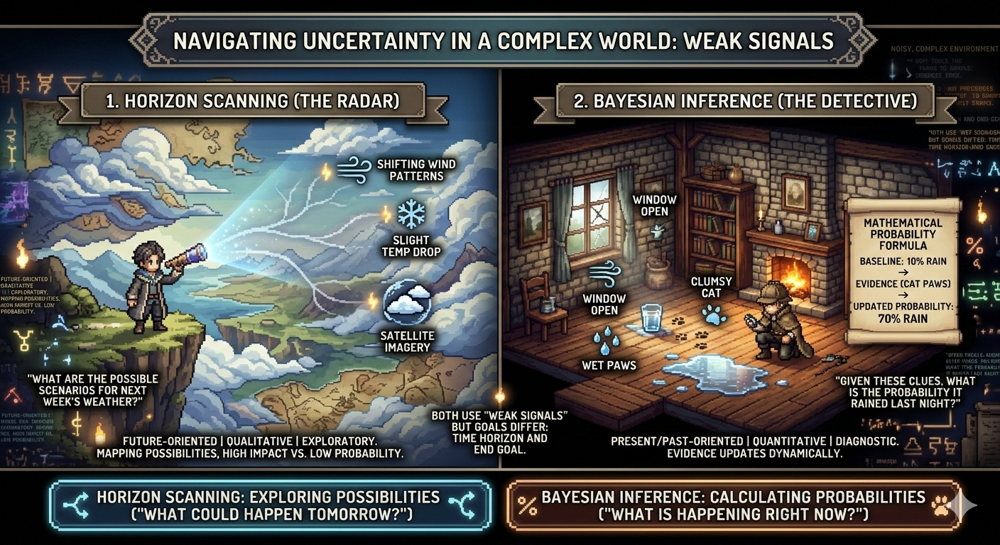

Intervention Strategy
Intervention Strategy
The Ultimate Anticipatory Architecture: Fusing Horizon Scanning, ToC, COM-B, and BATNA
Strategic frameworks are often treated as competing ideologies. Discover how unifying Horizon Scanning, Theory of Change, COM-B, and BATNA creates an unstoppable engine for systemic intervention.
 Applied Foresight
Applied Foresight
From Signals to Behavior: Turning Horizon Scanning into Real-World Change
Horizon scanning reveals what may happen—but real impact comes from translating those insights into behavior change using Theory of Change and COM-B.
GSI Radar: Turning Invisible Innovation into Actionable Intelligence
Most innovation happens outside formal systems. GSI Radar captures these unseen signals and transforms them into structured, actionable, and safety-aware intelligence.
 Behavioral Diagnostics
Behavioral Diagnostics
The Illusion of Agency: Why 'Opportunity' is the Most Ignored Variable in Behavioral Design
When programs fail, intervention designers frequently blame a 'lack of motivation' in the target audience. However, structural and environmental barriers are usually the true culprits.
 Intervention Strategy
Intervention Strategy
The 93 Levers of Change: How the BCT Taxonomy Replaces Guesswork with Precision
Once you have diagnosed a behavioral bottleneck using COM-B, what do you actually do? Discover how the Behavior Change Technique Taxonomy provides a scientific menu of precise interventions.
 Monitoring & Evaluation
Monitoring & Evaluation
Nothing as Practical as Good Theory: Why Theory-Based Evaluation is the Future of M&E
Data without context is just noise. Learn how Theory-Based Evaluation allows organizations to measure the invisible mechanisms that actually drive social impact.
 Intervention Strategy
Intervention Strategy
Bridging the Macro and Micro: Integrating Theory of Change with the COM-B Model
Theory of Change provides a flawless structural roadmap for impact, but it often fails to account for the friction of human psychology. Discover why integrating the COM-B model is the missing link for effective intervention design.
 Decision Making
Decision Making
You Will Never Have Enough Data: Decision-Making Under Uncertainty
In complex systems, waiting for perfect information is the riskiest decision of all. The real skill is learning how to act under uncertainty.

MethodologyHorizon Scanning vs. Bayesian Analysis: Radar vs. Detective
Both methods detect weak signals—but one explores the future, while the other calculates the present. Knowing the difference changes everything.
No articles found
We couldn't find any articles matching your search criteria.